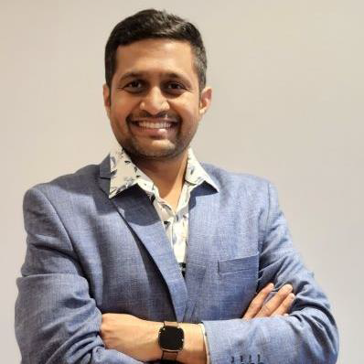
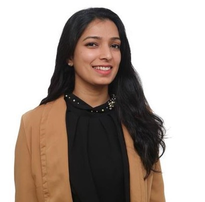

Structural Consultant & Director
B.E., M.Tech., Ph.D. (U. Auckland, NZ) MIE, MEngNZ
With 10+ years of experience spanning industry consultancies and advanced structural research, Sunil translates the latest advances in structural behaviour into practice — going beyond standard design codes to deliver solutions that are technically rigorous and built to last.

Over twelve years of professional experience in the construction industry, with nearly eight years of commercial and project control experience in New Zealand on complex infrastructure projects. Worked across public and private sectors — both contractor and consultancy side — always focused on improving lives and benefiting the wider community.
Mott MacDonald New Zealand
Ghella–Abergeldie Harker JV, Auckland
Rural Development Panchayat Raj Engineering Department, India
Vidyavardhaka Polytechnic College, Mysuru, India
Sankalp Constructions, Mysuru, India